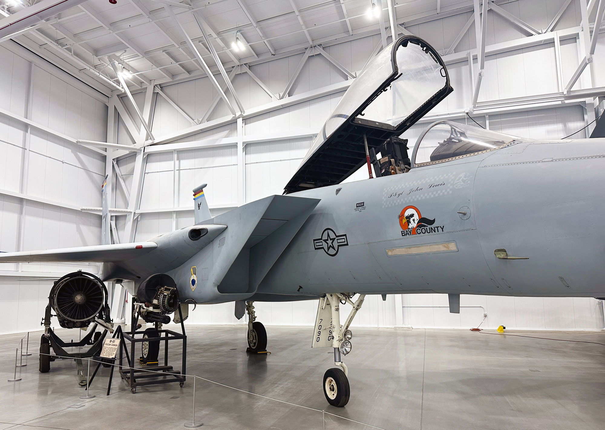
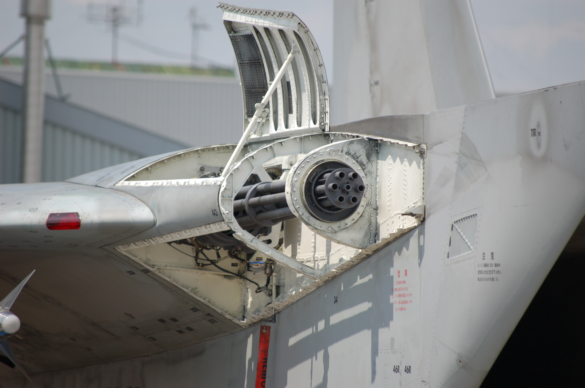
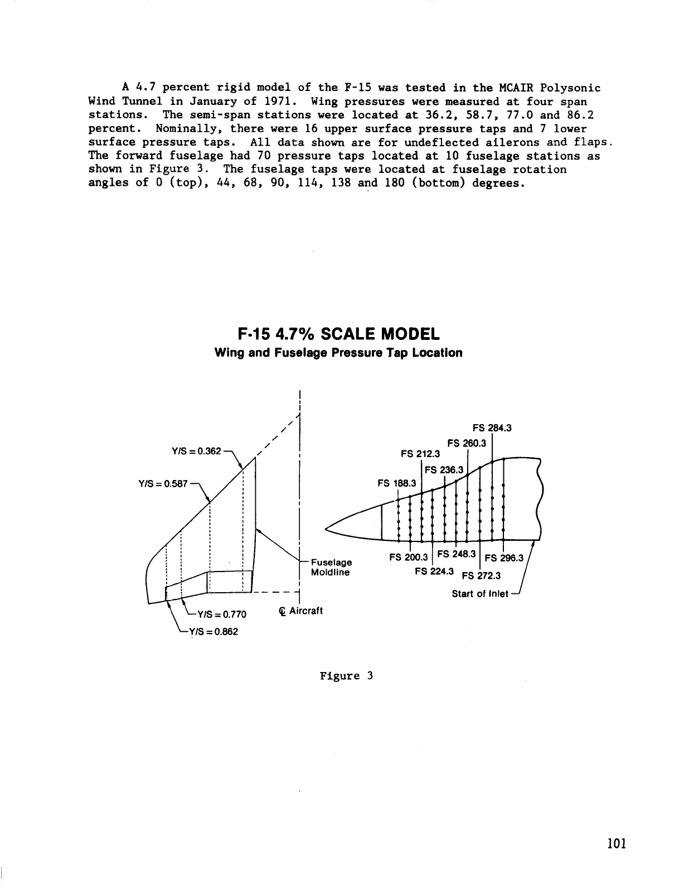

23 October 2026 · Dedicated research pass · Digital F-15C refinement
F-15C visual reference dossier
The cannon belongs in the outboard right wing-root shoulder beside the intake. The complete aircraft also needs a coherent inlet/wing/body height relationship and a broad, correctly placed wing. This dossier separates published facts, direct visual observations and artist estimates. It supplies correction criteria, not acceptance of the current model.
Immediate corrections
- Place the closed gun port on the outer right wing-root shoulder. Keep the six-barrel cluster recessed, with a clear opening and a short integrated fairing.
- Correct the inlet/wing/shoulder height relationship as one assembly. Select an inlet pose; do not use a schematic as an absolute-height blueprint.
- Preserve the researched total span while recovering the broad exposed chord and correct fore/aft location. Compare the actual top silhouette, not just total area.
- Rebuild fixed intersections into smooth skin transitions, while retaining deliberate running gaps around moving controls.
- Inspect the final saved STEP and exported GLB from all requested views. Validate attachment and travel separately from visual acceptance.
How to read the evidence
Published means a cited primary document explicitly reports it for its stated configuration. Observed means a visible photographic relationship or verified image provenance. Inferred means a reconstruction or proportion estimate, which must remain editable. Unverified items are listed below rather than promoted to facts. Production F-15C photographs govern fine exterior appearance; early-model and modified F-15A research data retain their original scope.
The gun-location correction
The USAF explicitly locates the internal cannon in the right wing root. The closed photo shows a compact dark oval port on a smoothly blended shoulder outboard of the inlet wall. It is not an external gun pod on the inlet roof. The open-bay photograph is a JSDF F-15 display/maintenance view; the normal aircraft skin hides most of that barrel bundle. USAF · USER-BAY



Published dimensions and architecture
| Topic/status | Evidence | Model consequence and sources |
|---|---|---|
| Identity published · F01 | F-15C is the single-seat Eagle; F-15D is the two-seat trainer. C has provision for conformal tanks. | Keep one seat and the approved clean gray configuration. Tanks alone do not identify the E. USAF · USAF-C |
| Nominal envelope published · F02 | F-15C sheet: 63 ft 9 in long ×42 ft 9¾ in span ×18 ft 5½ in high. Exact unit conversions are 19.431 m ×13.04925 m ×5.6261 m. | Use this as the authoring envelope; state landing-gear/ground pose for height. The decimals express conversion, not measurement precision. USAF-C |
| Conflicting dimensions published · F03 | Smithsonian object 85-0114 reports 19.05 m ×13.157 m ×5.664 m; USAF general sheet rounds to 19.44 m ×13 m ×5.6 m. | Retain provenance/configuration separately. Do not average differing records or silently change the chosen envelope. SMITHSONIAN · USAF |
| Wing reference area published · F04 | NASA TM-4604 Table 1 gives 608 ft² wing planform area, approximately 56.485 m², and 42.83 ft span for its F-15 test aircraft. | Track theoretical/reference area separately from visible exposed wing area, fillet area, and skin surface area. TM 4604 · WING-DEF |
| Wing outline published · F05 | CAP-TSD figure 1 gives 45° leading-edge sweep, −1° dihedral, taper ratio 0.25 and aspect ratio 3.01. | Use a broad swept cropped planform with slight anhedral. A correct span alone cannot establish correct chords or wing placement. CAP-TSD |
| Wing sections published · F06 | CAP-TSD figure 2 describes about 6% symmetric root, 3% highly cambered tip, and conical camber outboard of 20% semispan. | Thin the wing toward the tip. Camber starts beyond 0.2 of semispan; it is not limited to the outermost 20%. Exact airfoil coordinates remain unverified. CAP-TSD |
| Wing controls published · F07 | NASA TM-4604 describes trailing-edge flaps with 30° maximum downward deflection and no leading-edge devices. The primary surfaces include conventional ailerons, twin rudders and stabilators. | Preserve inboard flaps/outboard ailerons and a fixed leading edge. Treat the 30° value as a reference from a modified F-15A, not new certification of C limits. TM 4604 |
| Sweep-definition discrepancy published · F08 | TM-4604 Table 1 labels 45° at quarter chord; CAP-TSD figure 1 explicitly labels 45° at the leading edge. | Do not combine the labels. Use the explicit CAP-TSD leading-edge geometry and its drawing for this visual build; retain the discrepancy. TM 4604 · CAP-TSD |
| Stabilator geometry published · F09 | CAP-TSD figure 1: 50° leading-edge sweep, 0° dihedral, taper 0.34, aspect ratio 2.05. | Use a complete moving horizontal tail with the reference notch/outline rather than a fixed tail plus elevator. CAP-TSD |
| Differential tails published · F10 | The NASA low-speed model study includes symmetric−25° and differential±5° stabilator test configurations. | The complete surfaces move and can differ left/right. These test points do not establish all production stop limits or pivot dimensions. TM62360 |
| Inlet architecture published · F11 | NASA describes two side-mounted, two-dimensional external-compression inlets with three horizontal overhead compression ramps. A further internal diffuser ramp is described in the 1978 report. | Use an actual open rectangular/trapezoidal mouth, overhead ramp surfaces and a deep duct. Avoid a simple upright box or blocked black cap. TP 2374 · INLET-1978 |
| Variable inlet pose published · F12 | The cowl/ramp arrangement rotates about a transverse hinge near the lower cowl lip to vary capture area. Bleed exits and a bypass door are part of the upper inlet arrangement. | Declare one exterior pose before tracing. Do not mix lip height from one pose with ramp geometry from another. The gun shoulder must remain independent of the moving cowl. TP 2374 · INLET-1978 |
| Cannon identity/location published · F14 | USAF specifies one internal M61A1, 20 mm, six-barrel cannon with 940 rounds; text places it in the right wing root. | Provide only one starboard port. Its visible skin and in-game emission datum must agree. USAF · NMUSAF |
| Powerplant family published · F17 | The USAF sheet names two afterburning Pratt & Whitney F100 engines; the Smithsonian F-15C 85-0114 record identifies F100-PW-220. | Keep two round side-by-side nozzles. Select an installed photographic configuration; do not mix an experimental vectoring nozzle or GE-powered EX details into this C. USAF · SMITHSONIAN · NOZZLE |
| Nozzle architecture published · F18 | Pratt/NASA describes an F100 convergent/divergent nozzle with segmented elements and variable area. | Model nozzle depth, a constricted throat, overlapping segments, rings and restrained exposed link detail. A solid disk or shallow painted circle is inadequate. NOZZLE |
| Research-variant exclusion published · F27 | NASA describes its Flight Research Facility as an extensively modified F-15A that carried no armament; the 1994 ground-effects report uses a modified preproduction A. | Use their broad geometry/experiments with provenance. Exclude nose booms, canards, vectoring nozzles, research probes, altered electronics and testbed mass values. FRF · TM 4604 |
Photographic form and surface detail
| Topic/status | Evidence | Model consequence and sources |
|---|---|---|
| Inlet visible relation observed · F13 | The inspected NMUSAF front and side views show a strongly raked mouth: top lip forward of lower lip, with a narrowing fairing aft. The inlet straddles the fuselage side and belly region beside the wing shoulder. | Judge rake, mouth opening, lower lip and wing relationship together in front/side views. Do not lower a whole rectangular assembly without rebuilding its transition. NMUSAF |
| Closed cannon exterior observed · F15 | The user closed-aircraft photo and official NMUSAF front/side photos show a small recessed oval port in the outboard right wing-root shoulder, beside the inlet outer wall. | Seat a short smooth fairing into the root leading-edge shoulder. Keep the six-barrel visual cluster recessed. A gun pod sitting on the inlet roof is the wrong exterior. NMUSAF |
| Open gun-bay photograph observed · F16 | Commons identifies the user close-up as JSDF F-15 at Chitose 2009 by Komatta; panels are open for display/maintenance. | Use the photo for family location and visual barrel count. Do not leave the maintenance-open bay, full exposed bundle, Japanese markings or supports on the normal USAF C. USER-BAY |
| Installed exhaust appearance observed · F19 | The official rear-quarter production-C photo shows exposed segmented exhaust hardware and dark deep interiors, with heat-toned rear fuselage metal. | Match that selected installation. Avoid a smooth generic turbine cone, an external solid shell over all hardware, or identical gray material on hot metal and paint. NMUSAF |
| Vertical tails and fittings observed · F20 | Official front/rear views show two tall, nearly vertical swept fins and visibly different left/right top fittings. Their bases sit on the separated engine shoulders/booms. | Mirror the principal fin geometry, but preserve the reference aircraft’s asymmetric tip fittings. Do not cant the fins like a Silent Eagle concept. NMUSAF · CAP-TSD |
| Tail/body transitions observed · F21 | The rear-quarter photo separates the broad wing, horizontal stabilators, twin fins, engine housings and nozzle support regions into readable continuous structures. | Blend fixed root/body skin; keep control running gaps. Remove protruding hidden-root closure faces and support rods from exposed surfaces. NMUSAF |
| Canopy and cockpit observed · F22 | The selected C has a single-seat cockpit, fixed forward windshield and large curved opening canopy, framed at its perimeter. Canopy sits high on the narrow forward fuselage. | Keep one seat, curved transparent glazing, coherent sill lines and rear opening clearance. Do not add a second cockpit or a rectangular greenhouse. NMUSAF · SMITHSONIAN · USAF |
| Nose/radome observed · F23 | The official side photograph has a long pointed but smoothly rounded radome, darker than the adjacent forward fuselage, with a continuous lower contour. | Avoid an abrupt cone-cylinder seam, blunt cap or oversized cockpit step. The radar attachment does not require opening the nose. NMUSAF · USER-RADAR |
| Landing gear observed · F24 | The reviewed production-C photographs show tricycle gear with one visible tire at each nose/main leg, articulated struts, and distinct attached doors. | Keep wheel centers/track, tire profiles, strut supports and door attachments coherent. Exact production hinge stations and timing remain unverified. NMUSAF · SMITHSONIAN |
| Panel alignment observed · F25 | Closed-aircraft photos show restrained access-panel boundaries that follow the fuselage, inlet side fairings and root surfaces rather than thick raised strips. | Prioritize silhouette and continuity, then add thin shallow seams with consistent scale. Do not use panel detail to mask intersecting volumes. NMUSAF |
| Lights and antennae observed · F26 | The selected exterior photos show a root/leading-edge light lens, side formation strip and thin ventral appendages, plus fin-top fittings. Exact inventory varies by airframe and update. | Use shallow seated lenses/strips and small fittings supported by the skin; do not mirror every minor fitting automatically or assign an unsupported electronic function. NMUSAF |
| Radar and schematic context observed · F31 | The user radar image is the Raytheon APG-63(V)3 equipment illustration; the intake image is F l a n k e r’s own-work schematic. | Use them to understand context. Neither is a scaled exterior blueprint or a request to change the approved clean F-15C configuration. USER-RADAR · USER-RAMP · WIKI |


Estimated proportions for the current correction
CAD coordinates below use metres, +X right, +Y forward and +Z up. Nose Y 10 and exhaust Y −9.431 define the current model datum. These are placement hypotheses to compare against the assembled views, not manufacturer stations.
| Topic/status | Basis | Recommended use |
|---|---|---|
| Reference-view scale inferred · F28 | The saved CAP-TSD page is 1225×1600 px. Approximate top projection: 424 px length/283 px span; front: 288 px span/120 px height; side: 422 px length/126 px height. These imply about 0.045–0.047 m per source pixel with roughly 3% spread. | The views are comparable enough for broad proportions. Edge thickness and small drawing size preclude millimeter station claims. Recheck any major inferred station in more than one view. CAP-TSD |
| Lip/shoulder estimate inferred · F29 | The NASA front view puts the top mouth lip near the adjacent wing upper line within roughly 1–3 source pixels. In the NMUSAF parked/open pose the upper lip is visibly about 0.25–0.40 m above the gun/adjacent shoulder when scaled locally by an approximately 1 m mouth width. | The selected current pose is an estimated neutral cowl: upper lip CAD Z 3.10 m, wing chord plane Z 3.05 m and gun center Z 3.04 m. This preserves near-level NASA-front ordering. The parked/raised photographic pose would suggest roughly Z 3.30–3.40 m instead; it is not the selected pose. Review assembled views rather than treating any value as a manufacturer coordinate. CAP-TSD · NMUSAF |
| Gun placement estimate inferred · F30 | Current correction proposal CAD X 2.00, Y 2.05, Z 3.04 places the port outboard of inlet upper outer X 1.848, near the right root leading-edge shoulder. | Qualitatively agrees with the photographic ordering. This is an artist’s candidate datum, not a measured aircraft station. Verify top/front/side views and an unobstructed game emission path before acceptance. NMUSAF |
Do not lock a single lip height without locking the inlet pose. The NASA illustration places the lip near wing level; the parked production-C photograph has a visibly raised leading lip. The selected model uses an estimated neutral upper lip at Z 3.10 m, near the wing chord plane at Z 3.05 m and gun center at Z 3.04 m; it does not replicate the raised parked cowl. The important correction is the coordinated relationship of the mouth, the side shoulder, the wing and the recessed gun port.
Geometry references already saved



Photo and illustration index
The official photos remain on their original hosts. A reference may be linked without being newly inspected; the review column states which. Retain credits and source-specific usage conditions.
| Reference | Review/use | Limit |
|---|---|---|
| P1 · User: closed gun-port location | Visually inspected Correct shoulder/port relationship and smooth closed exterior. | Uploaded museum photograph; aircraft identity and photographer not supplied. |
| P2 · User: open JSDF gun bay | Visually inspected; provenance checked Outboard wing-root packaging and six visible barrel mouths. | Komatta, Chitose 2009. Maintenance-open family reference, not normal production-C exterior. |
| P3 · User: inlet pose schematic | Attachment visually inspected; provenance checked Changing overhead ramp/cowl arrangement. | F l a n k e r own-work illustration. No reliable external scale. |
| P4 · NASA figure 1: three-view and geometric table | Visually inspected; front enlarged for relation check Overall planform, relative stations, tail configuration and span. | Small baseline drawing, about 0.046 m/source pixel; not a manufacturing blueprint. |
| P5 · NASA figure 2: wing sections | Visually inspected Changing thickness and conical camber. | No numerical ordinate table; preserve section uncertainty. |
| P6 · NASA figure 3: exposed wing/reference continuation | Visually inspected Exposed outline versus theoretical centerline continuation; pressure stations. | Early 4.7% test model; pressure taps are not panel seams. |
| P7 · NMUSAF forward side: 230711-F-AU145-2087 | Visually inspected this pass Cannon port, mouth rake, canopy, radome, wing/fuselage continuity. | Ty Greenlees, USAF. Perspective photo with external tanks; do not trace as orthographic. |
| P8 · NMUSAF near head-on: 230711-F-AU145-2092 | Visually inspected this pass Outboard gun port, mouth height/shape, wing/lip relation, symmetric main geometry and asymmetric tail fittings. | Ty Greenlees, USAF. Not exactly on axis; inlet pose/camera perspective matter. |
| P9 · NMUSAF rear quarter: 230711-F-AU145-2078 | Visually inspected this pass Nozzles, bare rear metal, tails, wing/control underside, gear and structural junctions. | Ty Greenlees, USAF. One nozzle is partly occluded; distinguish stores from clean-airframe skin. |
| P10 · Boeing banking F-15C | Located/caption read; image not visually inspected Future broad top-planform cross-check. | Manufacturer catalog; no image-derived measurements claimed. |
| P11 · Smithsonian C 85-0114 gallery | Object/captions read; images not newly inspected in this pass Second identified C, canopy and side details. | Keep its configuration and dimensions separate from 86-0156. |


Cross-view acceptance checklist
Inspect the actual saved final geometry and the runtime export. Passing topology, symmetry or bounding-box checks does not establish visual quality.
| View/check | Acceptance criteria |
|---|---|
| Front | Match both mouths, their rake/sidewalls and lower-lip alignment; top lip should follow the declared inlet pose. Port appears on the aircraft’s right/outboard shoulder. Check wing anhedral, gear stance, fin spacing and intended asymmetric tip fittings. |
| Right side | Read one clean sequence from nose to canopy to inlet to wing root. Gun port must be beside the inlet and blend aft into the root, with no long exposed pod. Compare upper-lip, gun and shoulder heights in the same pose. |
| Left side | Keep the corresponding root fairing clean without a second gun. Check that fixed skin transitions match the right side while preserving genuine equipment asymmetries. |
| Top | Check 13.05 m span against 19.43 m length, broad exposed chords, cropped tips, 45° leading edge, equal left/right planform and correctly placed root leading edge. Keep inlet roof, shoulder, root and speedbrake readable as separate engineered regions. |
| Bottom | Inspect real open ducts, cavity walls, joined intake/belly transitions, wing-root closures, wheel bays and closed-door skin. No hidden support rod or closure plate may protrude through visible skin. |
| Rear | Inspect nozzle depth, throat and segments, coherent engine/boom/nozzle joins, stabilator gaps and notch, fin roots and ground clearance. Distinguish hot metal from paint. |
| Both front three-quarter views | Look for obvious clipped intersections, abrupt tangency breaks, floating detail, Z-fighting, thick seams, dislocated port and wing/body proportions that look wrong despite a passing bounding box. |
| Both rear three-quarter views | Check aft wing/body convergence, tail-boom blend, exhaust alignment and moving-surface gaps. A contact path alone does not prove a clean external union. |
| Mechanisms and runtime | Review gear down/stowed and intermediate travel; canopy and speedbrake open/closed; flap/aileron/stabilator/rudder extremes. Reopen the exported runtime GLB and confirm all pivots, normals, material separation and the muzzle datum survived export. |
| Lab evidence | Remeasure changed wing sections and declared reference/exposed areas; rerun low-speed attached-flow sweep and convergence. Keep inlet pressure recovery, supersonic behavior, stalls, structural strength and flightworthiness outside the claim. |
Still unverified
- Exact production-C airfoil ordinates, twist and local root/glove section coordinates.
- Manufacturer gun-port fuselage station, waterline, buttock line and exact fairing dimensions.
- Exact inlet lip/ramp geometry and positions for the selected neutral/parked/flight pose.
- Production geometry and blending radii at inlet/body/wing/boom junctions.
- Exact control hinge axes, stops and seal clearances for the chosen airframe.
- Exact landing-gear pivot coordinates, door sequencing and ground oleo extension under the chosen load.
- Precise antenna/light/vent equipment inventory for a chosen date and serial number.
- Authentic stencils/panel fastener patterns, paint codes, wear pattern and livery rights for final texture work.
- Full-aircraft flight coefficient maps, transonic and separated-flow behavior, engine installation performance and intake pressure recovery.
- Real cannon operating/installation internals are outside this exterior game-asset research; gameplay cadence, ballistics, effects and damage remain game parameters.
Source register and provenance
Used the requested Exa and Parallel Search services. Four Exa searches requested 32 result slots; six Parallel searches returned 43 entries. These discovery counts include duplicates and rejected results and do not mean 75 fully validated sources. Selected primary source text was read; the saved NASA figures, user location/bay images and the three cited official production-C photographs were visually reviewed. The user-linked Wikipedia page was read as a reference hub. This pass made no modeling or game-code changes.
| Source | Type | Use and limit |
|---|---|---|
| USAF-C · USAF F-15C history and technical sheet | Primary; production C | Specific imperial dimensions and one-seat configuration; do not treat converted decimals as manufacturing tolerances. |
| USAF · USAF F-15 Eagle fact sheet | Primary; family/C-D | Variant identities, conventional aircraft architecture, gun location and capacity. Sheet says current as of April 2019; do not use inventory counts as current. |
| CAP-TSD · McDonnell/NASA: CAP-TSD Analysis of the F-15 Aircraft, Dale M. Pitt, 1989 | Primary; baseline geometry/early test model | Figures 1–3: three-view, wing/stabilator parameters and sections. Local PDF and three figures inspected. Test comparison uses an early 4.7% model, not production-C manufacturing drawings. |
| TP 2374 · NASA TP-2374: Flight and Wind-Tunnel Comparisons of the Inlet/Airframe Interaction, 1984 | Primary; inlet architecture and F-15 research aircraft | Apparatus description and figure 3 explain side-mounted external-compression inlets, cowl/ramp/bleed layout. Research instrumentation and manual controller are not production details. |
| INLET-1978 · NASA-hosted F-15 Inlet/Engine Test Techniques and Distortion Methodologies, vol.1, 1978 | Primary; development/test hardware | Confirms three forward compression ramps plus internal diffuser ramp and rotation near lower cowl lip. Not a scaled drawing for exterior placement. |
| TM 4604 · NASA TM-4604: Dynamic Ground Effects Flight Test of an F-15 Aircraft, September 1994 | Primary; modified preproduction F-15A | Table 1: 608 ft² planform area, 42.83 ft span; description: conventional controls, no leading-edge devices. Testbed engine/mass/height do not define a production C. |
| TM62360 · NASA TM-X-62360: Low-Speed Aerodynamic Characteristics of a 0.075-Scale F-15 Model, 1974 | Primary; early model experiments | Supports all-moving/differential stabilator architecture; sampled test deflections are not a complete production travel limit specification. |
| NOZZLE · Pratt & Whitney/NASA: F100 Exhaust Nozzle Area Control, Joseph R. Kozlin, 1980 | Primary; F100 engine | Supports convergent/divergent segmented nozzle architecture. Use production aircraft photographs for visible covers and installed shape. |
| FRF · NASA F-15 Flight Research Facility | Primary; NASA F-15A testbed | Explicitly an extensively modified aircraft without armament; use general proportions, exclude research appendages and experimental hardware. |
| NMUSAF · NMUSAF F-15C 86-0156 record and gallery | Primary; identified production C | Main exterior photographic reference. Side/front/rear photographs visually inspected in this research pass; displayed tanks are omitted in the approved clean model. |
| SMITHSONIAN · Smithsonian F-15C 85-0114 object record | Primary; specific museum object | Second identified production C. Its measured object dimensions differ from USAF nominal specifications; preserve separately rather than averaging. |
| BOEING · Boeing Images: F-15C Eagle Banking in Flight | Primary manufacturer image catalog | Located and text/caption read; image not visually reviewed in this pass. Useful future top-planform cross-check subject to site usage conditions. |
| WING-DEF · NASA Glenn: Wing Geometry | Primary; geometry definitions | Projected planform area differs from total upper/lower skin area. Aspect ratio uses span squared divided by reference area. |
| USER-BAY · Komatta: M61 Vulcan mounting on JSDF F-15 at Chitose 2009 | Primary photographer; family detail | Matches user gun-bay attachment. Maintenance-open JSDF aircraft, not confirmed F-15C. Metadata photographed 9 August 2009; upload/summary date 2010 differs. |
| USER-RAMP · F l a n k e r: Eagle intake schematic | Author illustration; secondary technical interpretation | Matches user intake attachment. Own-work schematic, not manufacturer geometry. Use only to understand changing ramp/cowl configuration. |
| USER-RADAR · Raytheon APG-63(V)3 equipment illustration, Commons record | Manufacturer illustration via secondary host | Matches user radar attachment; internal equipment context. Does not authorize or require an exposed radar or an open radome. |
| WIKI · User-linked F-15 Eagle encyclopedia article | Secondary hub | Read to locate references and identify user images. Technical model decisions use primary sources or clearly labeled photographic inference, not unsupported encyclopedia claims. |
The low-speed wing lab estimates attached linear flow. It does not establish inlet pressure recovery, full-aircraft CFD, transonic shocks, stall behavior, structural strength, certification or flightworthiness. Artist-built local sections, pivots, fairings and game parameters must remain identified as estimates until stronger evidence is available.